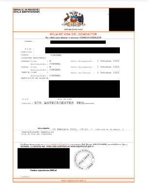
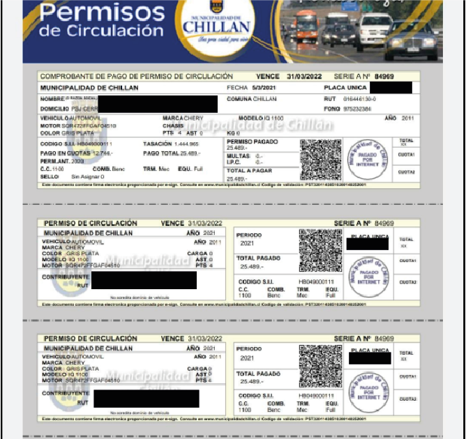

Datos vehículo
Si repartes en moto o auto necesitaremos que tengas a mano:
- Licencia de conducir
- Hoja de vida del conductor
Para gestionar la hoja de vida de forma gratuita e instantánea haz click aquí para descargarla de forma instantánea con tu clave única.
- ¿Cómo tramito la clave única para obtener la hoja de vida?
Puedes tramitarlo de cualquiera de las siguientes formas:
- Vía telemática: agenda una videollamada a través del siguiente LINK. Una hora antes de la cita recibirás un e-mail con el link para conectarte. Debes tener tu cédula de identidad y sólo debe ser realizada por el titular.
- De forma presencial: en cualquier oficina del Servicio de Registro Civil e Identificación o de la red ChileAtiende, solicitándola en el mesón de atención presentando tu cédula de identidad vigente.
- Permiso de circulación vigente
Para gestionarlo debes comunicarte con tu municipalidad. Puedes hacerlo de forma online o presencial.
